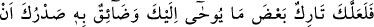
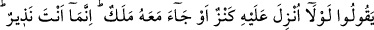
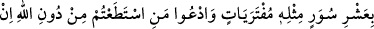
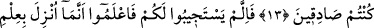
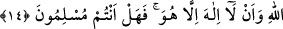
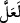

KUR’AN MEYDAN OKUYOR
12. Belki de sen: “Ona bir hazine indirilmeli veya beraberinde bir melek gelmeli
değil miydi?” demelerinden ötürü sana vahyolunanın bir kısmını terk edecek
olursun ve bu yüzden göğsün daralır. Sen ancak bir uyarıcısın. Allah, her şeye
vekildir.
13. Yoksa “Onu kendisi uydurdu” mu diyorlar? De ki: “Öyleyse siz de onun gibi
uydurulmuş on sûre getirin; eğer doğru iseniz Allah’tan başka çağırabildiklerinizi
de çağırın.”
14. Eğer size cevap vermedilerse bilin ki o Allah’ın ilmiyle indirilmiştir ve O’ndan
başka tanrı yoktur. Nasıl, artık müslüman oldunuz mu?
Rivayet edilir ki Mekke müşrikleri: “Bize tanrılarımıza sövmeyen, atalarımıza karşı
çıkmayan bundan başka bir Kur’an getir.” dediklerinde Nebî (a.s.) zâhiren onların
tanrılarına hakareti terk etmeyi düşündü. Bunun üzerine Allah Teâlâ bu âyeti inzal
buyurdu.
“Belki de sen:”
“
(belki)” kelimesi, ya teraccî mânâsı ifade eder. Teracci demek “belki felaha
erersiniz.” (el-Bakara, 2/189) âyetinde olduğu gibi meydana geleceği kesin olmayıp
olması umulan bir şeyi beklemek demektir. Ya da işfak mânâsına gelir. İşfak ise “belki
de kıyamet saati yakındır.” (eş-Şûra, 42/17) âyetinde olduğu gibi endişe edilen bir
şeyi beklemek demektir. Ümid de endişe de Allah ile değil, âyetin muhatapları ile ilgili
durumlardır.
Âyette “
”nin birinci kullanımı kastedilmiş olabilir. Buna göre mânâ şöyle olur:
“Müşriklerin bu akıl karıştırıcı tekliflerinin büyüklüğü sebebiyle onların seni şimdi icra
etmekte olduğun (sana) vahyedileni tebliğ etme görevinin bir bölümünden
vazgeçirecekleri vehmine düşüyorsun.”
Bir şeyi ummak, o şeyi gerektiren şartların oluşmasını ve meydana gelmesini
gerektirmez. Çünkü, umulan o şeyi bertaraf edecek bir şey de olabilir. Bu ise